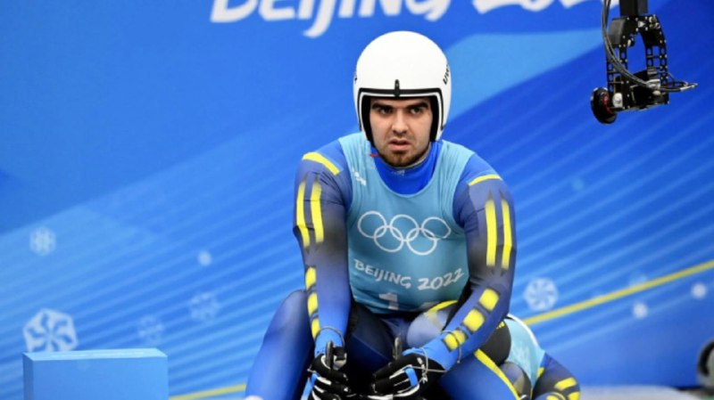
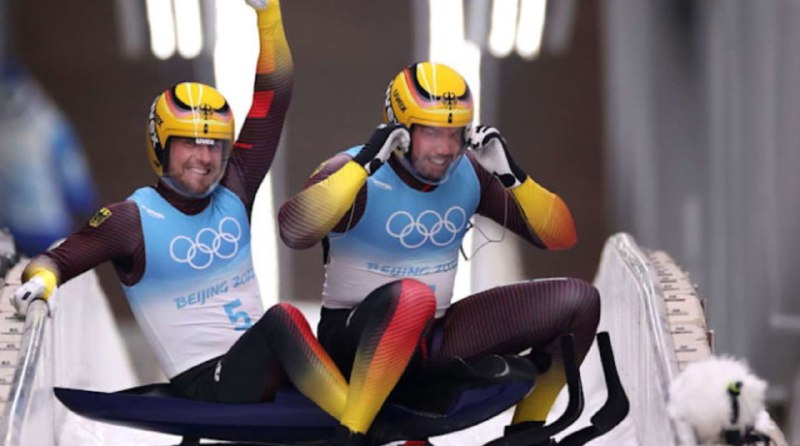
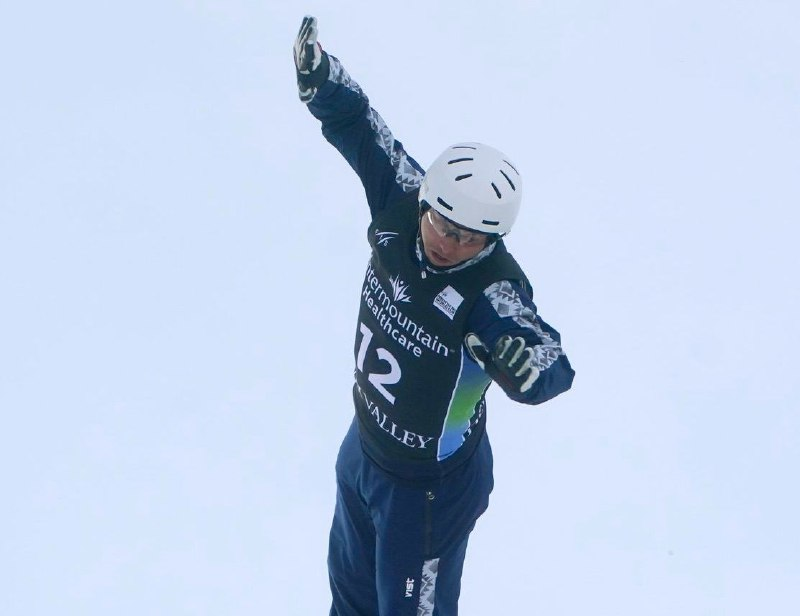
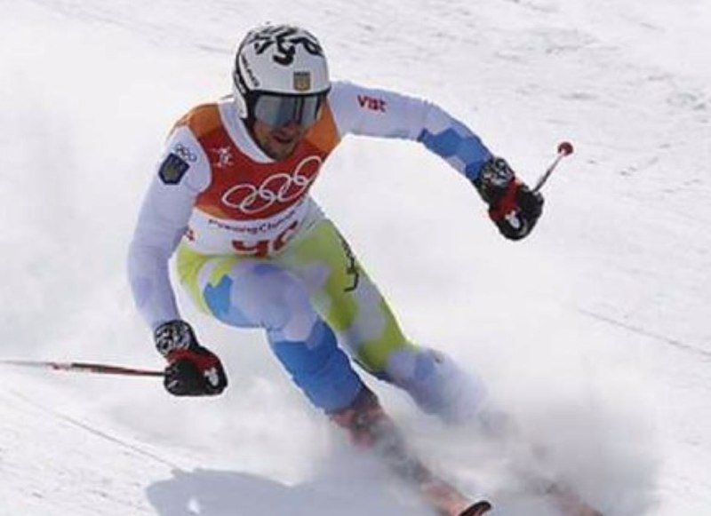
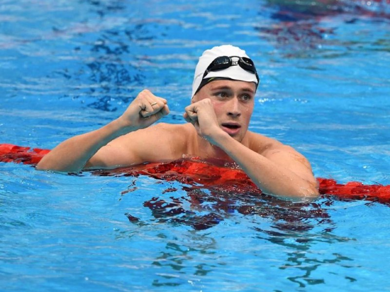

Олімпіада: команда збірної повторила найкращий результат з санного спорту
На Олімпійських іграх-2022 у Пекіні у санному спорті команда збірної України посіла 11 місце.
Джерело: "Суспільне".
Деталі: Участь у змаганнях брали 14 команд.
Відбувалися у форматі естафети: кожна з команд мала пройти по три заїзди – один за одним стартували жіноча й чоловіча одиночка, а за ними – двійка. Для передачі естафети необхідно було на фініші торкнутися до пристрою (в цьому випадку із зображенням олімпійських кілець) над головою, після чого наступні учасники отримували сигнал, що можна стартувати – перед ними відкривалися ворота.
Україна виступала в складі Юліанни Туницької (в особистій першості посіла 21 місце), Антона Дукача (22) та пари Ігоря Стахіва й Андрія Лисецького (15).
Олімпіада 2022: у медальному заліку знову змінився лідер
Джерело: офіційний сайт Олімпіади.
Деталі: У п'ятий день Олімпіади відбулися змагання в 10 видах спорту, в яких було розіграно 6 комплектів нагород.
За підсумками цього дня Україна все ще не здобула медалей, однак українські санкарі Ігор Стахів і Андрій Лисецький посіли 15-е місце у двійці в санному спорті, що стало найкращим результатом України за останні 16 років на Зимових Олімпіадах.
Перше місце в медальному заліку завдяки золотим медалям в санному спорті та лижному двоборстві захопила Німеччина.
Загалом у здобутку німців 5 золотих та 3 срібних нагороди.
Збірна України не вийде на старт у командному турнірі з лижної акробатики на Олімпіаді-2022
Що сталося
Збірна України з фристайлу не виступить у командному турнірі на Олімпійських іграх у Пекіні. Це буде перший турнір з лижної акробатики на Зимових Іграх-2022, однак України в старт-листі на змагання відсутня.
Україна відправилася на Олімпіаду-2022 у складі п'яти лижних акробатів - чинного олімпійського чемпіона Олександра Абраменка, Дмитра Котовського та Олександра Окіпнюка, а також Анастасії Новосад та Ольги Полюк. Вони мали змагатися у трьох турнірах у Пекіні: командному, а також чоловічому і жіночому.
Україна стала однією з восьми збірних, що виборола право змагатися на Олімпіаді-2022 в командному турнірі з лижної акробатики. Утім, у старт-листі українська команда відсутня. За інформацією Суспільне Спорт, збірна України представлена не буде через позитивні тести на коронавірус у трьох лижних акробатів: Дмитра Котовського, Олександра Окіпнюка та Анастасії Новосад.
Україна показала найкращий результат за 20 років на Олімпіаді-2022 у супер-гіганті
Другий результат у топ-40 для Івана Ковбаснюка.
Україна показала найкращий результат за останні 20 років на Зимових Олімпіадах у супер-гіганті. Вдалося це Івану Ковбаснюку - єдиному представнику України у гірськолижному спорті.
Ковбаснюк вдруге виступав на Олімпійських іграх у Пекіні. Перший його старт відбувся у понеділок, 7 лютого, де український гірськолижник показав найкращий результат в історії України у швидкісному спуску (даунгілі) - 33-е місце.
Читайте також: Україна показала найкращий результат в історії у чоловічому даунгілі на Олімпіаді-2022
Другим виступом Ковбаснюка став чоловічий супер-гігант. І у ньому український гірськолижник ще покращив на одну позицію свій виступ у Пекіні у порівнянні з даунгілом.
Плавець Михайло Романчук більше не виступатиме за Рівненщину
Дворазовий призер Олімпіади у Токіо, рівненський плавець Михайло Романчук з 2022 року виступає за Хмельницьку область. Про таке рішення спортсмена стало відомо з профільного Міністерства.
Зокрема, сьогодні, 10 лютого, про це повідомив начальник обласного управління у справах молоді та спорту Віталій Ліпський, пише Суспільне.
Михайло Романчук у кінці 2021 року написав на Міністерство молоді та спорту заяву з проханням всі його виступи з січня 2022 року зараховувати за Хмельницькою областю/ Про таке в Рівненській облдержадміністрації наприкінці року дізнались з Міністерства.